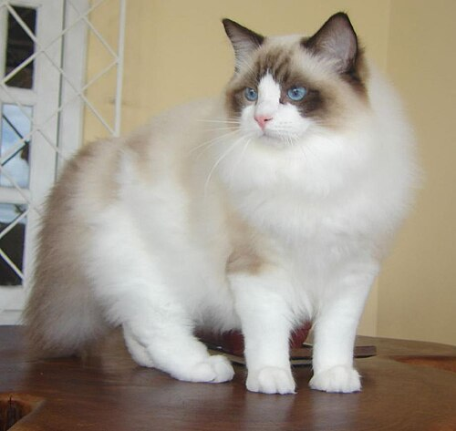
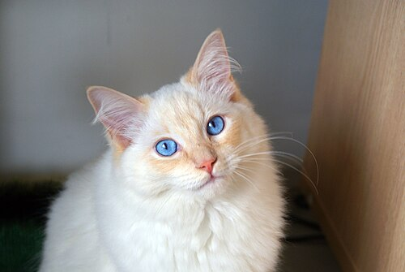
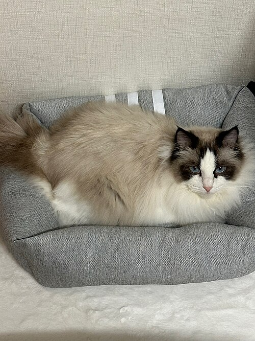
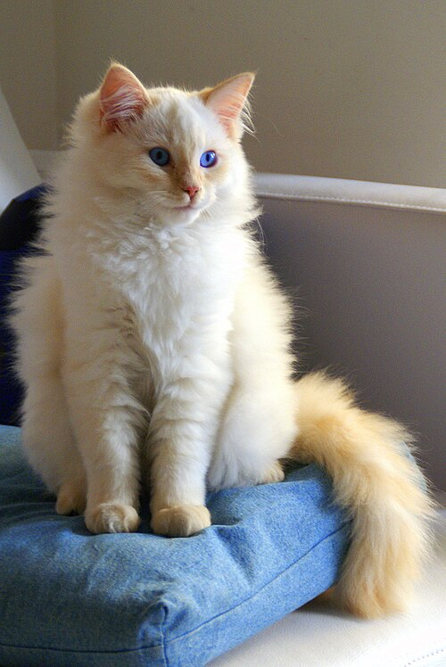

Summary
The Ragdoll is a breed of cat with a distinct colorpoint coat and blue eyes. Its morphology is large and weighty, and it has a semi-long and silky soft coat. American breeder Ann Baker developed Ragdolls in the 1960s. They are best known for their docile, placid temperament, and affectionate nature. The name Ragdoll is derived from the tendency to go limp and relaxed when picked up. The breed is particularly popular in both the United Kingdom and the United States.
Ragdolls are known as dog-like cats due to their tendency to follow people around, their receptiveness to handling, and their relative lack of aggression towards other pets.
Ragdolls are distinguishable by their pointed coloration (where the body is lighter than the face, ears, legs, and tail), large round blue eyes, soft, thick coats, thick limbs, long tails, and soft bodies. Their color rings are commonly tricolor or bicolor.

History
The breed was developed in Riverside, California, by a breeder named Ann Baker. In 1963, a regular, non-pedigreed, white domestic longhaired cat named Josephine produced several litters of typical cats. Josephine was not of any particular breed, nor were the males who sired the original litters. Ann Baker herself said that the original cats of the Ragdoll breed were "alley cats". Josephine later produced kittens with a docile, placid temperament, affectionate nature, and a tendency to go limp and relaxed when picked up.
Out of those early litters came Blackie, an all-black male, and Daddy Warbucks, a seal point with white feet. Daddy Warbucks sired the founding bi-color female Fugianna, and Blackie sired Buckwheat, a dark brown-black Burmese-like female. Both Fugianna and Buckwheat were Josephine's daughters. All Ragdolls are descended from Baker's cats through matings of Daddy Warbucks to Fugianna and Buckwheat.
Baker, in an unusual move, spurned traditional cat breeding associations. She trademarked the name Ragdoll, set up her own registry—the International Ragdoll Cat Association (IRCA)—around 1971, and enforced stringent standards on anyone who wanted to breed or sell cats under that name. The Ragdolls were also not allowed to be registered by other breed associations. The IRCA is still in existence today but is quite small, particularly since Baker's death in 1997.
In 1975, a group led by a husband-and-wife team, Denny and Laura Dayton, broke ranks with the IRCA to gain mainstream recognition for the Ragdoll. Beginning with a breeding pair of IRCA cats, this group eventually developed the Ragdoll standard currently accepted by major cat registries such as the CFA and the FIFe. Around the time of the spread of the Ragdoll breed in America during the early 1960s, a breeding pair of Ragdolls was exported to the UK. Eight more cats followed this pair to fully establish the breed in the UK, where the Governing Council of the Cat Fancy recognizes it.
Breed Description
Temperament
The Ragdoll has been known to have a very floppy and calm nature, with claims that these characteristics have been passed down from the Persian and Birman breeds. Opinions vary as to whether this trait might be the result of genetic mutation or merely an instinctive reaction from being picked up as kittens by their mother. The extreme docility of some individuals has led to the myth that Ragdolls are pain resistant. Some breeders in Britain have tried to breed away from the limpness owing to concerns that extreme docility "might not be in the best interests of the cat".
Breed standard marketing and publicity material describe the Ragdoll as affectionate, intelligent, relaxed in temperament, gentle, and an easy-to-handle lap cat. The animals are often known as "puppy cats", "dog-like cats", "cat-dogs", etc., because of their placid nature and affectionate behavior, with the cats often following owners from room to room as well as seeking physical affection akin to certain dog breeds. Ragdolls can be trained to retrieve toys and enjoy doing so. They have a very playful nature that often lasts well into their senior years. Unlike many other breeds, Ragdolls prefer staying low to the ground rather than the highest point in the household.

Physical characteristics
The Ragdoll is one of the largest domesticated cat breeds. Fully-grown females weigh from 8 to 15 pounds (3.6 to 6.8 kg). Males are substantially larger, ranging from 12 to 20 pounds (5.4 to 9.1 kg) or more. It can take up to four years for a Ragdoll to reach mature size. They have a sturdy body, bulky frame, and proportionate legs. Their heads are broad with a flat top and wide space between the ears. They have long, muscular bodies with broad chests and short necks. Their tails are bushy and long in length, their paws are large, round, and tufted, and their coats are silky, dense, and medium to long length. Due to their coats tending to be long, they usually require brushing at least twice a week. Adults develop knickerbockers on their hind legs and a ruff around their necks.
The breed is often known for its large, round, deep-blue eyes, though other cats may have that feature as well. The genes for point coloration are also responsible for these distinctive blue eyes. Deeper shades of blue are favored in cat shows.
Although the breed has a plush coat, it consists mainly of long guard hairs, while the lack of a dense undercoat results, according to the Cat Fanciers' Association, in "reduced shedding and matting". There may be a noticeable increase of shedding in the spring.
Ragdolls come in six distinct colors: seal, chocolate, red, and the corresponding dilutes: blue, lilac, and cream. There also are the lynx and tortoiseshell variations in all colors and the three patterns. Ragdoll kittens are born white; they have good color at 8–10 weeks and full color and coat at 3–4 years.


Patterns
- Colorpoint: one color darkening at the extremities (nose, ears, tail, and paws)
- Mitted: same as pointed but with white paws and abdomen. With or without a blaze (a white line or spot on the face), they must have a belly stripe (white stripe that runs from the chin to the genitals) and a white chin. Mitted Ragdolls, which weren't allowed titling in CFA until the 2008–2009 show season, are often confused with Birmans. The easiest way to tell the difference is by size (the Ragdoll being larger) and chin color (Mitted Ragdolls have white chins, while Birmans have colored chins), although breeders recognize the two by head shape and boning.
- Bicolor: white legs, white inverted V on the face, white abdomen, and sometimes white patches on the back (excessive amounts of white, while it does occur, is against breed standard).
Variations
- Lynx: a variant of the colorpoint type having tabby markings. This variation always comes with white ear lines, no matter the pattern.
- Tortoiseshell or tortie: a variant noted for mottled or parti-colored markings in the above patterns.
Health
A 2025 UK study of over 21,000 Ragdolls under primary veterinary care found a median age at death of 12.85 years. Earlier studies reported lower figures: a UK study found a life expectancy of 10.31 years compared to 11.74 overall, and an English study of patient records found a life expectancy of 10.1 years. One study utilizing Swedish insurance data from 1999–2006 showed that the Ragdoll and Siamese had the lowest survival rate among common cat breeds, with a 78% chance of survival to 10 years; the authors of the 2025 VetCompass study noted that such earlier figures may have been biased downward, as Ragdoll populations at the time were younger on average than other breeds, skewing the data toward more early-age deaths. The 2025 VetCompass study authors noted that the Ragdoll's life expectancy is comparable to that of non-pedigree cats.[30] In a review of over 5,000 cases of urate urolithiasis (bladder stones), the Ragdoll was over-represented, with an odds ratio of 5.14. An English study reviewing over 190,000 patient records found the Ragdoll to be less likely to acquire diabetes mellitus than mixed breed cats. The prevalence in Ragdolls was 0.24% compared to 0.58% overall.
Hypertrophic cardiomyopathy
The Ragdoll is one of the more commonly affected breeds for hypertrophic cardiomyopathy. An autosomal dominant mutation of the MYBPC group of genes, specifically the R820W substitution, is responsible for the condition in the breed.
The allelic frequencies of the R820W substitution were 0.17 in cats from Italy and 0.23 in cats from the US in 2013. The proportion of individual Ragdoll cats carrying the mutation has been estimated at 30% in the UK. The HCM prevalence in Ragdolls was found to be 2.9% (95% CI = 2.7–8.6%). Cats carrying one copy of the mutation (heterozygous) are not likely to show signs of disease and may live a normal lifespan; cats with two copies (homozygous) are at substantially higher risk of developing severe HCM, typically between one and two years of age.[36] Widespread genetic testing since the identification of the R820W mutation has been associated with a reduced incidence of HCM in the breed and earlier recognition of the disease.